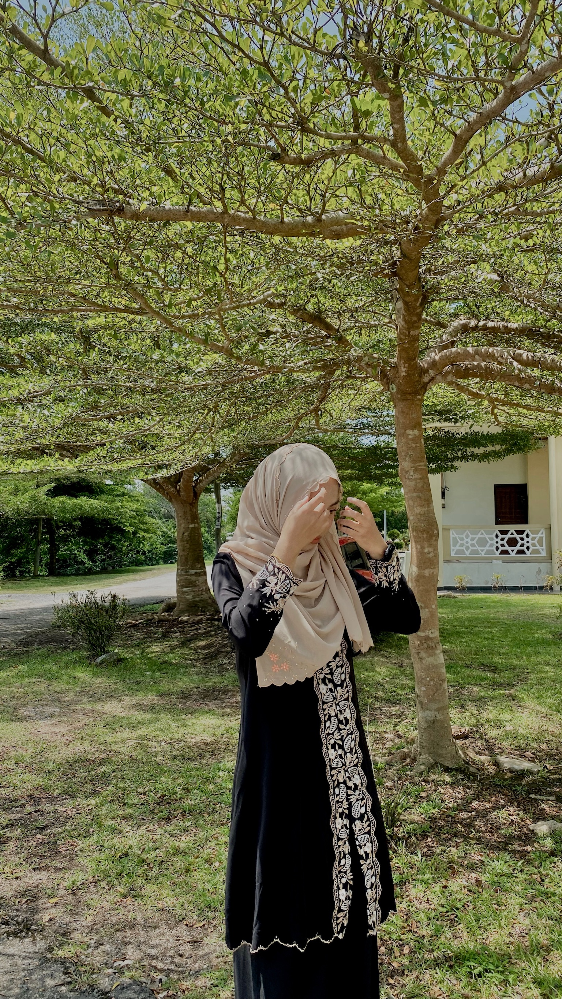

2012-2015

Hi! I’m Ainur Fatini, a final-year Information Management student at UiTM Campus Machang, Kelantan. As I near the end of my academic journey, I’m excited to share my experiences and insights with you. Welcome to my little corner of the web—a space where I dive into everything from my studies to my personal passions and creative pursuits.
This site is more than just a reflection of my academic life—it's a place to capture my growth, celebrate the challenges I’ve overcome, and explore the stories that shape who I am. From tackling complex projects to diving into new hobbies, I’m here to share the journey with you and hopefully inspire others along the way.